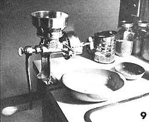
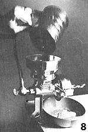
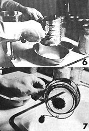
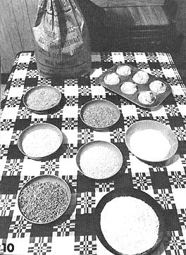

When You Own A Corona...
With a Corona grain mill, you can transform inexpensive, bulk grain direct from the farm or a feed and seed store ... into piping hot steamy, muffins and other delicious end products - right in your own kitchen.
By Ernest J. Karhu
January/February 1971
Our Corona grain mill was quite greasy and dirty when we unpacked it and this momentarily gave us second thoughts about the sanity of our decision to mill our own flour. These doubts grew as we tried - without success - to remove the protective coating with several different cleaning compounds. Then we chanced upon the magic combination:
We filled a sink with hot water and added a cup of vinegar. The vinegar cut the grease and, after a fifteen minute soak, the surface of the water was covered with numerous dirty globules. A little scrubbing of every unassembled part of the machine with a steel-wool soap pad was next and a dry towel finished the job. Our Corona mill was sparkling clean.
The design of the Corona is very simple and straightforward and a quick glance at the enclosed parts diagram was all we needed to assemble the little grinder. After a few minutes we stepped back to admire our handiwork: There it was! Our own Corona grain mill in all its shining glory. Imagine that! We were excited . . . and we hadn't even begun to realize the many ways that littlc machine was going to enrich our lives.
The mill was somewhat heavier than we had anticipated and that presented some problems when we began looking for a suitable place to mount it. Our old kitchen table wouldn't do because it wasn't sturdy enough. We finally decided to clamp the Corona to the counter top of our sink and we remov ed a drawer so that we could securely tighten the clamping wing nut on the base of the mill. It was at this point that we realized the counter top was being dented by the clamp! A scrap of wood under the base of the mill soon remedied the situation.
If you use a Corona as much as we use ours, the machine should be permanently secured to a solid surface with screws, or bolts and the base of the mill is designed for mounting in this manner. If lack of space forces you (as it does us) to store your mill when it's not in use, however, you can satisfactorily use the quick-clamp arrangement also built into the mill's base. To keep the Corona from slipping during heavy grinding, in this case, you may find that you have to tighten the clamping wing nut with a wrench . . . so don't forget to insert that piece of wood to protect your table or counter top.
Before we attempted to grind our first batch of grain we poured some old dry cereal into our Corona's hopper for a test run to familiarize ourselves with the mill's operation. It was adjusted too tightly, the crank would barely turn and the "flour" was full of tiny specks of metal. The grinder itself was being milled! We readjusted the mill and continued grinding cereal until it came out clean.
Next we purchased some wheat from a local feed and grain store after being assured that it had been grown locally and was untreated with chemicals or pesticides. Grain bought directly from a feed store often has chaff and other debris in it and ours was no exception. We had to clean it by hand. If you find yourself with this problem you'll quickly learn that winnowing-pouring grain from one container to another in front of a fan or outside in a mild breeze-still works, age-old method that it is.
We filled the hopper of our Corona with clean grain and started cranking . . . and just as so many others have discovered, we found that the handle was hard to turn and our first batch of flour was too coarse. A little experimenting, however, showed us that the grinding is much easier and the resultant flour much finer if the grain is poured slowly into the hopper in small, even amounts. The flour produced using this technique is fine enough for almost any baking. For very fine flour, simply sift out the coarse hulls, grind them a second time, sift and add to the original flour.
You'll find it helpful if an assistant pours the grain into your Corona's hopper while you mill. Our son, Johnny, enjoys this task and does a rather good job of evenly trickling in the wheat, oats, barley or whatever. Actually, neither Johnny nor I look upon this activity as a task. Milling grain has been an educational experience for the children, has a therapeutic value for us all and has become a family ritual in our household. Since we no longer eat cakes or pastry desserts, we reward the children for their help each milling clay with a fresh batch of biscuits or muffins spread with apple butter and honey.
As much as we enjoy using our mill, we are careful not to mill more flour than we can use quickly. Nutrients in whole grain flour, as you know, are lost if the flour is exposed to air for any extended period and (unlike commercially processed and devitalized flour) the whole grain product will start to spoil a month or so after grinding. We store our flour in canning jars; keep it in a cool, dry place; and use it within two weeks.
The organically-grown grains we have now purchased and ground in our mill include wheat, oats, rye, buckwheat groats, corn, millet, brown rice, unpearled barley and soybeans. Believe it or not, we have even purchased brown rice and unpearled barley in a supermarket at very reasonable prices. With the growing number of natural food shops and a contact or two with a farmer or feed store, it's quite easy to keep a home mill busy and your grocery bills at rock bottom while substantially improving the quality of the food you eat.
CORONA CHECK LIST
1. Clean the mill thoroughly as soon as you get it.
2. Fasten the grinder firmly to your work surface.
3. Make a few "trial runs" to familiarize your self with the mill's operation and adjustments.
4. Immediately examine the texture of the first flour produced by the mill to determine whether you've set the adjustment properly.
5. If the adjustment is too tight, you may mill the grinder itself.
6. Feed a light, continuous flow of grain into the hopper. If you fill the hopper, results will be less than satisfactory.
7. Tighten the adjusting screw completely (run it in - without forcing - until it's snug) and then back the screw off a quarter turn for a fine grind.
8. Sift the flour to remove any hulls. Coarse flour can be milled a second time but - with proper adjustment and careful operation - this is not usually necessary.
9. Turn the mill's handle in smooth, continuous strokes.
10. Don't necessarily expect immediate success. Experiment. Learn to use the mill properly.
11. Be patient - it really works!
12. Once you've mastered your mill, enjoy it. Be creative! Try blending various grains. Let the mill become a family thing.
 1. Use vinegar, warm water, soap-impregnated steel wool and elbow grease for the first cleaning of your mill. 2. The business end of the assembled Corona. Note scrap of wood under base to protect counter. 3. For a finer grind, tighten adjustment screw. Note removeable cover which keeps ground grain from flipping upward. Old ""throw-away"" processed cereal can be used for Corona's trial run. 4. Grinding wheat. It seems natural (even for lefties) to grip adjustment screw with left hand while cranking with right. |
5. You'll get a finer, more consistent grind if grain is slowly poured into hopper by assistant. |
 9. superfine milled WHOLE grain flour ready to use. Nothing to it. Every home should have a Corona Grain Mill! |
|
 8. cranked through one or two more times for . . . |
 6-7. One time through should produce flour fine enough for most use but-for special baking-the few larger hulls can be sifted out and . . . |
 10. With a Corona Grain Mill, you can transform inexpensive, bulk grain direct from the farm or a feed and seed store . . . into piping hot, steamy muffins and other delicious end products - right in your own kitchen. The bowls above (starting at upper left and moving across and down) contain brown rice, buckwheat groats, milled corn meal, barley, millet, wheat and milled wheat. |
|
11. Muffins, fresh baked from home-ground grain . . . pure, organically-produced honey . . . homemade apple butter in a cut glass jar . . . and a happy, satisfied customer. |
|
|